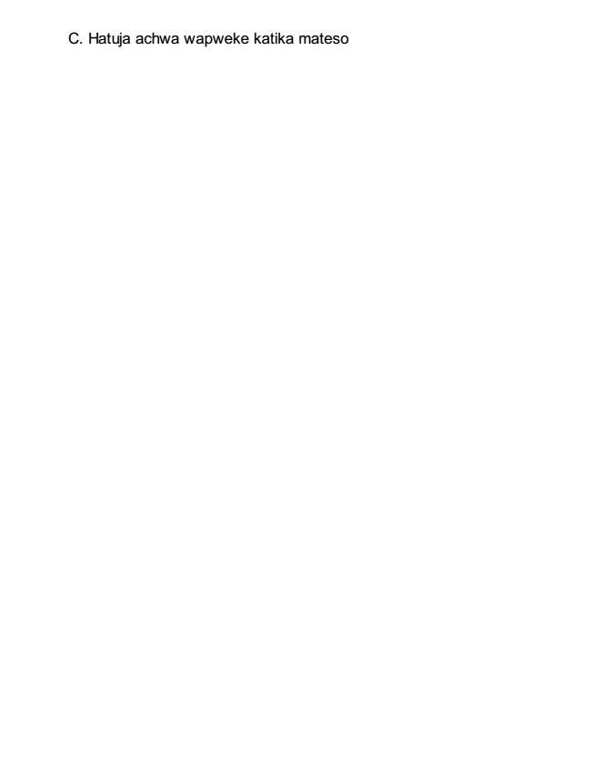

Masomo kutoka mlimani
I. Somo 1: Nenda mlimani
A. Wakati tukiwa mlimani tuko mbali na shughuli za Dunia
1. Mifano ya watu walioenda juu mlimani
2. Tunaendaje " juu mlimani?"
B. Wakati tukiwa mlimani ni kwamba tumekuwa karibu Mungu
1. Kuna masomo tunayo ya hitaji kutoka kwa Mungu
2. Tunahitaji muda wa maandalizi kabla hatujaweza kuwa hudumia wengine.
II. Somo la 2: Waliobarikiwa
A. Ufafanuzi wa waliobarikiwa
B. Hizi Baraka ni moja ya mambo ya kiroho.
C. Baraka za kiroho ni bora kuliko Baraka za kimwili. D. Mifano ya watu ambao walibarikiwa.
1. Abrahamu 2. WaIsraeli 3. Samsoni
4. Mariamu
III. Somo la 3: Kubarikiwa kwa maskini wa kiroho
A. Maelezo ya maskini katika roho
1. Maskini katika roho ni wale ambao wanajitambua kuwa wao si kitu 2. Maskini wa roho ni wale ambao wanatambua kuwa Mungu ni kila kitu
3. Maskini wa kiroho ni wale ambao wanatambua kwamba"Kwa binadamu haiwezekani B. Baraka za maskini wa roho ni—ufalme wa mbinguni
1. Ufalme wa mbinguni ni haki
2. Ufalme wa mbinguni ni amani
3. Ufalme wa Mbinguni ni furaha
IV. Somo la 4: Baraka kwa wanao lia
A. Daudi—Analia kwa sababu ya dhambi yake
1. Wanajisikia wahitaji
2. Wanahitaji kupona B. Ayubu—Analia kwa sababu ya magumu katika dunia
1. Kwa sababu kuna dhiki katika dunia 2. Kwa sababu ya udhaifu wao wa kibinadamu C. Yeremiah—Analia kdwa sababu watu wengine wako kwenye uhitaji
1. Kwa sababu kuna watu ambao wamepotea 2. Kwa sababu kuna watu ambao wenye mahitaji
V. Somo la 5: Baraka za wenye upole
A. Kizuizi cha ushahidi wa upole juu ya matendo yao. B. Wapole ni wanyenyekevu kwa mapenzi ya Mungu. C. Wapole husitahimili machukizo kwa subira. D. Wapole hufundishika. E. Wapole watairithi nchi.
VI. Somo 6: Baraka za wenye njaa
A. Lazima kuwa na shauku kwa ajili ya Mungu. B. Tuna paswa kumtafuta Yeye siku zote. C. Mungu huwapa thawabu wale wamtafutao
VII. Somo la 7: Baraka za wenye wenye rehema
A. Ina maanisha nini kuwa na rehema? B. Kwa nini tuna paswa kuwa na rehema?
VIII. Somo la 8: Baraka za wenye moyo safi
A. Kwa nini kuna mengi yahusuyo moyo?
1. Vitendo vyetu ni jambo liloko kwenye moyo wetu 2. Inaonekana inaweza kuwa kuwadanganya
3. Mungu hawezi kudanganywa kamwe juu ya mioyo ya wanadamu
B. Jinsi gani unaweza kutakaswa? C. Sehemu maarufu ya Mungu D. Kulinda msitari wa madhari wazi
1. Daima mlilie Mungu kuuchunguza moyo wako "Nihukumu Ee BWANA" 2. Dumisha usafi wa maadili "Nimetembea katika uadilifu wangu"
3. Kwa kungania Umtumaini Mungu “Nimemtumaini BWANA pia”
Tenacious—holding fast; characterized by keeping a hold
IX. Somo la 9: Baraka za wapatanishi
A. Wapatanishi ni nini? B. Jinsi gani wapatanishi hufanya amani?
1. Kwa kutoonyesha hisia
a. Usikasirike b. Usiwe mzungumzaji sana
c. Usiwe mbeya d. Usijihusishe mahali ambapo hapa kuhusu e. Usijihusishe mwenyewe katika majanga mazito
f. Usiwe mtu kinyume au wakukana g. Usiwe mtu wa kiburi 2. Kwa kuchukua vitendo C. Ni dhawabu gani ya Wapatanishi?
1. Yeye ni mbarikiwa 2. Yeye ni mwana wa Mungu
X. Somo la 10: Baraka za wanaoteswa
A. Teseka kwa ajili ya Kristo tu B. Mungu atakuzawadia kwa ajili ya mateso

C. Hatuja achwa wapweke katika mateso